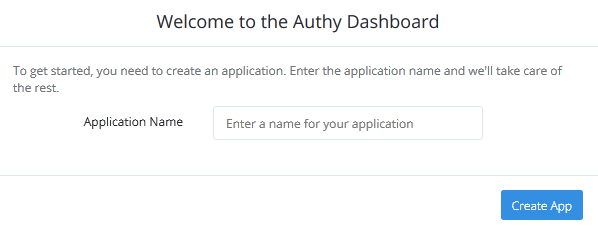

Configuring two-factor SSH authentication with Authy on Arch Linux, SSH, Security
Configure Two-Factor SSH Authentication with Authy - Arch Linux
Difficulty: 1
Time: 10 minutes.
Authy provides an easier platform for setting up an authentication, as compared to two-factor authentication. Authy is very simple to install and manage.
In this article, you will learn how to configure a two-factor SSH authentication with Authy. For this, you need to install an Authy application in your smartphone. You can find this app in Google play.
Configure Authy in phone
- On your smartphone, download Authy from Google play, and then configure Authy by verifying it with your mobile number.
- Build a developer account at https://dashboard.authy.com.
Make sure that you use the same mobile number that you used in the Authy application.
- Verify your account by completing the verification process sent to your registered email account. You will get a token on your smartphone.
Create an application
- Log into your developer's account at https://dashboard.authy.com.

- Enter the Application Name, and then click Create App to create an application.

- You will get an API key for ssh.

Copy the API key as it is. You will need this in future steps.
- Click Finish.
Configure server
- Download the Authy installer.
curl "https://raw.githubusercontent.com/authy/authy-ssh/master/authy-ssh" -o authy-ssh
- Install Authy.
sudo bash authy-ssh install /usr/local/bin
- When prompted, enter the API key that you received from the Authy Dashboard web site.
- When prompted for what to do when Authy is down, choose
option 1.
Configure two-factor for the user
- Run the following command to configure the user.
sudo /usr/local/bin/authy-ssh enable User_name email_id country_code
- Restart the SSH server.
sudo systemctl restart sshd.service
- Make sure that the command is located in the
your/etc/ssh/sshd_config file.
cat /etc/ssh/sshd_config | grep ForceCommand
- If the command was not installed in the
/etc/ssh/sshd_config file, manually enter it, and restart the SSH service.
ForceCommand /usr/local/bin/authy-ssh login
sudo systemctl restart sshd.service
- Uninstall
authy-ssh.
sudo /usr/local/bin/authy-ssh uninstall
Conclusion
In this article, you have learned to configure two-factor authentication on a SSH server using Authy.